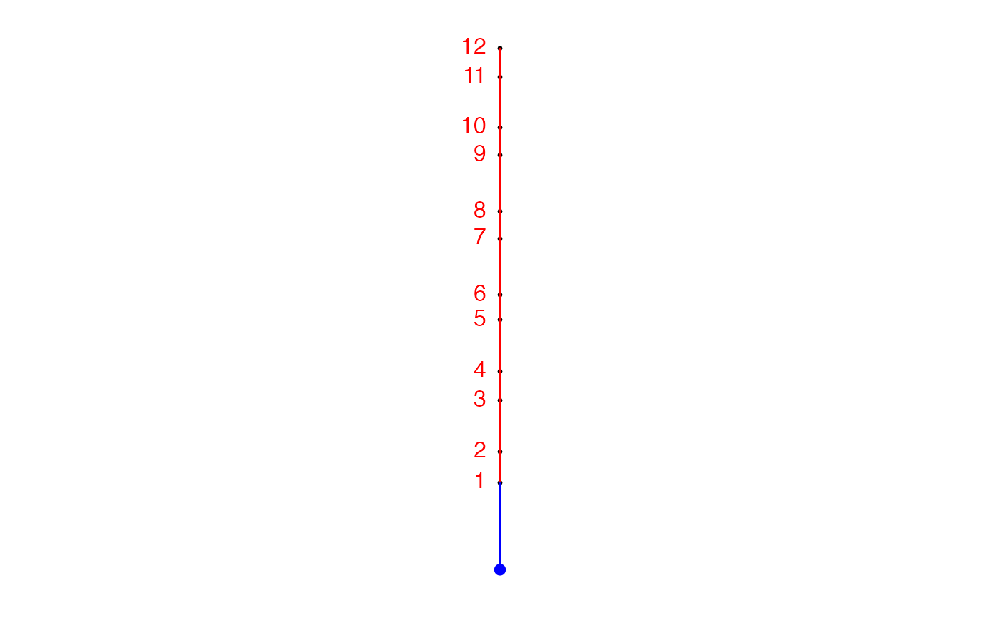
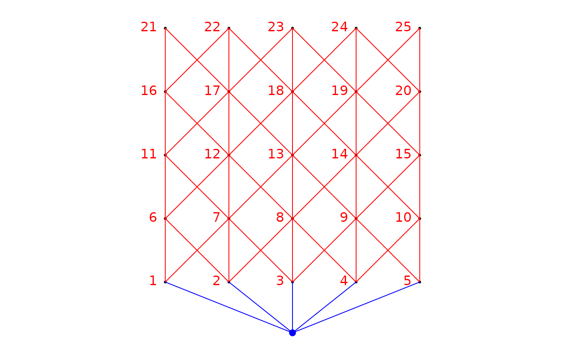

R/aem.weight.edges.R, R/aem.weight.time.R
aem.weight.edges.RdThese functions construct a vector of weights that can be
associated to the edges of the connexion diagram used as a basis to build
AEM eigenfunctions. aem.weight.edges is general and can be used for 1 or
2 dimensional problems. aem.weight.time is meant to be used only for time
series. It is a wrapper for aem.weight.edges.
aem.weight.edges(
nb.object,
coords,
distmat = NULL,
alpha = 2,
beta = NULL,
max.d = NULL,
unit.angle = "degrees",
rot.angle = 0,
rm.same.y = TRUE,
plot.connexions = TRUE
)
aem.weight.time(
dates,
distmat = NULL,
alpha = 2,
beta = NULL,
max.d = NULL,
unit.angle = "degrees",
rot.angle = 0,
rm.same.y = TRUE,
plot.connexions = TRUE
)Object with class 'nb', computed by the spdep package, containing a list of neighbours for each sampling unit (site or time).
A three-column matrix or data frame. Column 1: identifiers of the points (must be numeric). Columns 2 and 3: the X and Y coordinates of the points.
Class 'matrix' or 'dist' object containing a dissimilarity or distance matrix. (See details).
Numeric. Exponent of the first weighting function. (See details).
Numeric. Exponent of the second weighting function. (See details).
Numeric. Maximum distance for weighting. Default value if
max.d=NULL: the maximum distance among a set of sites divided by 2 or the
full span of a time series divided by 2 (not recommended in most problems,
see details). A warning is given if max.d = NULL and the default
value is used.
Character. The measurement units in which the angle is defined: either "degrees" (default) or "radians".
Numeric. Angle of the vector describing the process influencing the sites. This argument generates a rotation of the site coordinates. The set of coordinates is rotated counterclockwise. Negative values will produce a clockwise rotation.
Logical (TRUE, FALSE). Determines if the links
perpendicular to the gradient should be removed. Default value: TRUE.
If these links have already been removed, this argument put to TRUE
will make the function crash. See details for more information.
Logical (TRUE, FALSE). Determines if the
sites and the associated connexion diagram should be plotted after rotation
of the coordinates by gradient.angle.
A vector of dates, class 'numeric' or 'Date'.
A vector of weights associating a value to each edge of the graph.
These functions should be used in close relationship with
aem.build.binary, consequently many of the arguments in this
function and in aem.build.binary are the same.
The argument distmat may contain general forms of dissimilarity, for
example the difficulty of transfer of individuals, matter or energy among the
sampling units through space or time.
In aem.weight.edges, two weighting functions, described in Legendre and
Legendre (2012, eqs. 114.3 and 14.4) have been implemented, where \(d_{ij}\)
is the distance between sites \(i\) and \(j\):
Weighting function 1: | \(1 - (d_{ij}/max(d))^\alpha\) |
Weighting
function 2: | \(1/d_{ij}^\beta\) |
Also note that if a value is provided for beta (that is, if it is not
NULL), weighting function 2 is used regardless of whether alpha
is defined or not.
In most applications, the default value of max.d is not optimal. A more
meaningful solution in many applications is to compute a Moran's I correlogram
(for univariate data) or a Mantel correlogram (for multivariate data), and
provide the distance where the correlation becomes 0 as the value for max.d.
aem.weight.time():
Legendre, P. and L. Legendre (2012) Numerical Ecology, 3rd English edition. Elsevier Science BV, Amsterdam.
Legendre, P. and O. Gauthier (2014) Statistical methods for temporal and space-time analysis of community composition data. Proceedings of the Royal Society B - Biological Sciences, 281, 20132728.
### Time serie example
### Example - 12 dates (days from January 1st of year 1)
### in a 6-year study starting September 5, 2000
if(require("spdep", quietly = TRUE)){
dates <- as.Date(c(129,269,500,631,864,976,1228,1352,1606,1730,1957,2087),origin="2000/1/1")
autocor.limit <- 522 # Limit of autcorrelation in the correlogram
### Using aem.weight.time()
(wtime <- aem.weight.time(dates, alpha=2, max.d=autocor.limit))
### Using aem.weight.edges()
n <- length(dates)
nb <- cell2nb(1, n)
xy.dates <- cbind(1:n, rep(1, n), dates)
(wtime <- aem.weight.edges(nb, xy.dates, alpha=2, max.d=autocor.limit))
n <- length(dates)
nb <- cell2nb(1, n)
xy.dates <- cbind(1:n, dates, rep(1, n)) ## Note the inversion of 'dates' and 'rep(1,n)'
wtime <- aem.weight.edges(nb, xy.dates, alpha=2,
max.d=autocor.limit,rot.angle=90) # Note that 'rot.angle=90' was used
### Spatial example using default d.max (notice the warning)
###########################################################################
nb<-cell2nb(5,5,"queen")
xy <- cbind(1:25,expand.grid(1:5,1:5))
(wspace <- aem.weight.edges(nb,xy))
}

#> [1] "The default value for 'max.d' was used. The weights may not be optimum"

#> [1] 0.875 0.750 0.750 0.875 0.750 0.750 0.875 0.750 0.750 0.875 0.750 0.750
#> [13] 0.875 0.875 0.750 0.750 0.875 0.750 0.750 0.875 0.750 0.750 0.875 0.750
#> [25] 0.750 0.875 0.875 0.750 0.750 0.875 0.750 0.750 0.875 0.750 0.750 0.875
#> [37] 0.750 0.750 0.875 0.875 0.750 0.750 0.875 0.750 0.750 0.875 0.750 0.750
#> [49] 0.875 0.750 0.750 0.875